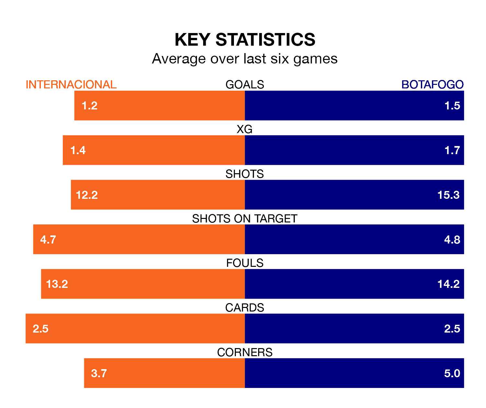

Internacional host Botafogo at the Estádio José Pinheiro Borda on early Thursday on the back of three consecutive wins in Serie A.
Internacional have picked up 13 points from their last six games, and they face a Botafogo side who have lost their last five matches, and collected five points from the last possible 18.
With 57 goals in 37 games so far this season, Botafogo are the league's third-highest scorers with 1.5 goals per game. And they are conceding fewer than average, letting in 34 goals at a rate of 0.9 per game.
Internacional, meanwhile, are average scorers, with 1.2 goals per game. They have also conceded 1.2 goals per game.
In Tiquinho Soares, the visitors have one of the league's sharpest shooters so far this season. He has notched 17 goals in 31 appearances, to sit second in the scoring charts.
His goal rate of one every 140 minutes is quicker than that of Enner Valencia, the home side's top scorer with a goal every 177 minutes, and a total of eight goals in 21 games.
In the last 10 years, Internacional and Botafogo have played each other on 13 occasions. Internacional won seven of them, Botafogo five, and they drew once.
On average, Internacional scored 1.6 goals and Botafogo 1.2 in those matches.
Their last meeting was on August 13, when Botafogo won 3-1 at home.
Botafogo are fifth in the table after 37 games, of which they have won 18 and drawn 10, earning 64 points.
Internacional are four places behind Botafogo in ninth, with 14 wins and 10 draws putting them on 52 points.
Internacional's last match was on Saturday, a 2-1 win against Corinthians, with Mauricio and Wanderson getting the goals for Internacional.
Botafogo drew 0-0 with Cruzeiro last time out, on Sunday.
